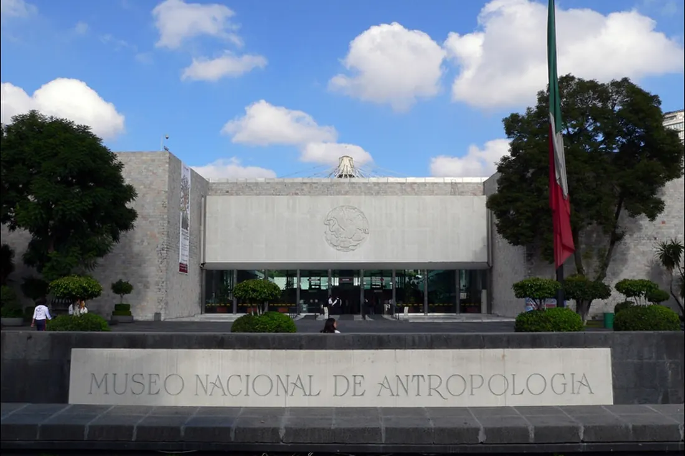

Национальный музей антропологии
Мехико, Мексика
Один из важнейших музеев мира, посвящённый доколумбовым культурам Америки. Знаменит Камнем Солнца ацтеков и монолитами майя; 22 выставочных зала охватывают несколько тысячелетий мезоамериканской истории.
Сайт музея